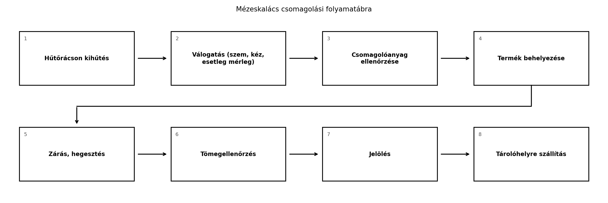

Egy mézeskalácssütő üzemben a sütőből kikerülő, szépen kisült szív vagy huszár akkor válik eladható, biztonságos és hosszabb ideig megőrizhető késztermékké, ha a csomagolás, a tárolás és a minőségvizsgálat a technológiai rend szerint történik. A vevő a pulton csomagolt mézeskalácsot emel le, a gyerekek gyakran karácsonyfadíszként is használják, az ajándéktasakban pedig akár hetekig utazhat. Ezért a péknek ellenőriznie kell, hogy a termék ne csak „szép”, hanem csomagolásra alkalmas, jól jelölt, megfelelően tárolt, és ne legyen rejtett hibája – például repedés, bennmaradt lágy bél, nyers tészta vagy penészedés. Ebben az alfejezetben a mézes tészta készárukezelését, csomagolását és jelölését, tárolását, valamint a mézeskalács mintavételét, érzékszervi vizsgálatát és hibáinak javítását tanuljuk meg.
Képzelj el egy munkaasztalt, amelyen három adag mézeskalács-szív fekszik. Az első adag forrón, közvetlenül a sütőből került celofánzacskóba: a belső oldalán páracseppek, a felülete megpuhult. A második adagot szobahőmérsékletre hűtve csomagolták, de a zacskó nincs lezárva: a széle száradni kezd, a fűszerillat csökken. A harmadik adagot kihűtve, száraz, illat- és fényvédő fóliába csomagolták, a tasakra a terméknév, az összetétel, az allergének, a nettó tömeg és a minőségmegőrzési idő került. Az első kettőnél minőségi hiba vagy tárolási veszteség várható, a harmadiknál a termék elérte a készáru-állapotot. Ebben az alfejezetben ezt a rendezett állapotot tanítjuk meg.
Definíció. A mézeskalács készárukezelése a sütés utáni műveletek összessége: hűtés, érzékszervi ellenőrzés, felesleges morzsa eltávolítása, esetleges díszítésjavítás, válogatás, csomagolásra előkészítés, csomagolás, jelölés és raktári elhelyezés.
Szabály. A mézes tésztát csak akkor szabad csomagolni, ha a termék a sütés után a technológiai lapban előírt hőmérsékletre hűlt, felülete száraz, a bélzet már nem ragadós, és a bevonat vagy díszítés megszilárdult. A melegen csomagolt mézeskalácsban a páralecsapódás bevonat-feloldódást, ragacsos felületet és penészedést okozhat. A pontos hűtési hőmérséklet termékfüggő: jellemzően szobahőmérséklet (körülbelül 20–25 °C) vagy az alá, a technológiai lap szerint.
Hűtés. A kis darabos mézeskalácsokat (szív, báb, huszár) rácsra, perforált tálcára vagy tiszta, száraz lemezre sorakoztatva hűtjük, lehetőleg pormentes, huzatmentes helyen. A nagyobb figurák, házak összeállított darabjait is csak teljesen kihűlt állapotban szabad egymásra helyezni vagy csomagolni. A termékeket ne hűtsük közvetlenül hideg fémlemezen, ha a pára lecsapódhat a felületre; inkább rácsot vagy sütőpapírt használjunk.
Válogatás és érzékszervi előszűrés. Csomagolás előtt a dolgozó minden terméket röviden nézzen át: forma, szín, felületi simaság, bevonat épsége, díszítés rögzülése, aljszél. A hibás darabokat külön edénybe tesszük, és a hibajelleg szerint válogatjuk (lásd a Hibák résznél). Az idegen anyag (pl. hajszál, rost, fémszálka) észlelése esetén a terméket ki kell vonni, és a műszakvezetőnek jelezni kell.
HACCP. A csomagolás előtti válogatás kritikus pontja az idegenanyag-észlelés és a sérült csomagolóanyag kiszűrése. A határ nem kvantitatív: minden látható idegen anyag, penészgyanús vagy nem átsült darab kizárásra kerül. Az ellenőrzés tárgya: a válogató dolgozó képzése, a munkahely megvilágítása, az asztal tisztasága, a selejt elkülönített gyűjtése. A kritikus határ és a selejt százalékos aránya a pékség HACCP-tervében évszakonként és termékenként változhat (ellenőrizendő: a pékség HACCP-terve, NÉBIH útmutatók).
A mézeskalács csomagolásához élelmiszerrel érintkezésre alkalmas anyagokat használunk: celofánfólia, polipropilén (PP) vagy polietilén (PE) tasak, zsírpapír, pergamen, karton doboz, fémdoboz (pl. ajándékdoboz), szalag, ragasztófül. A csomagolóanyagnak száraznak, szagmentesnek, szakadásmentesnek és megfelelő jelölésűnek kell lennie. A csomagolás célja: megóvni a terméket a kiszáradástól, a nedvességfelvételtől, a fénytől, az idegen szagtól, a portól és a sérüléstől, továbbá biztosítani a jelölési felületet.
Szabály. A csomagolóanyagok tárolása a felhasználásig tiszta, száraz, szagmentes, elkülönített helyen történjen, a FIFO-elv szerint. A sérült, gyűrött, nedves, penészes vagy ismeretlen jelölésű csomagolóanyagot nem használunk fel.
A csomagolás lépései:
Gépbiztonság. Csomagológépet (fóliahegesztő, záróeszköz, esetleg folyamatos csomagológép) a tanuló csak betanítás után, felügyelettel kezelhet. Üzem előtt meg kell nézni a védőburkolatot, a reteszelést és a vészleállítót; tisztítás, beállítás vagy szerszámcsere csak leállított, áramtalanított, újraindítás ellen biztosított gépen történhet. A hegesztőszál forró, égést okozhat; a gépet a gyártói adatlap és a munkáltatói utasítás szerint kell üzemeltetni.
Higiénia. A csomagolás során is tilos az ékszer, a nem letakart sebekkel végzett munka, a köhögés-hányás után élelmiszerrel dolgozás. A csomagolóanyagot nem szabad a földre tenni, és a termék csomagolás közben ne érintkezzen piszkos kézzel, pulttal vagy ruhával.
Technológiai adat (tanulási példa). A fólia vastagsága és a hegesztési hőmérséklet fóliatípusonként eltér. Például PP fóliánál a hegesztőszál hőmérséklete általában 120–160 °C, PE fóliánál 100–130 °C lehet; ezek nem hatósági előírások, hanem gyártói beállítási tartományok (ellenőrizendő: a fólia gyártói adatlapja, a csomagológép gépkönyve).

Definíció. A mézeskalács csomagolt termék, ezért jelölni kell a fogyasztói tájékoztatás szabályai szerint. A legfontosabb kötelező elemek: a termék megnevezése, az összetevők felsorolása csökkenő tömeg szerint, a tápértékjelölés (energia, zsír, ebből telített zsírsavak, szénhidrát, ebből cukrok, fehérje, só – 100 g-ra; a kisüzemi, közvetlen értékesítésre vonatkozó mentességet az 1169/2011/EU V. melléklete szerint kell ellenőrizni, ellenőrizendő), az allergének kiemelve az összetevők között, a nettó tömeg, a minőségmegőrzési idő (jelölése: „minőségét megőrzi: …”), a tárolási feltétel (pl. „száraz, hűvös helyen, fénytől védve”), az előállító neve és címe, valamint a tételazonosító.
Előírás. A csomagolt mézeskalács jelölésére a fogyasztók élelmiszerekkel kapcsolatos tájékoztatásáról szóló 1169/2011/EU rendelet és a nemzeti végrehajtási előírások vonatkoznak, a sütőipari termékekre különösen az összetevők, az allergének, a nettó tömeg és a minőségmegőrzési idő megadása. A pontos szakasz és a nemzeti jelölési részletszabály kiadás előtt ellenőrizendő (ellenőrizendő: a hatályos 1169/2011/EU rendelet, a Magyar Élelmiszerkönyv jelölési előírásai, NÉBIH útmutatók).
Sütőipari szempont. A mézeskalács összetevői között gyakran a búzaliszt, a tojás, a tej, a dió és a mandula is szerepel, ezért az allergénkiemelés különösen fontos. Az írókázott vagy cukormázzal díszített terméknél a tojásfehérje-allergén is feltüntetendő. A csomagolt mézeskalácsnál a nettó tömeg a díszítéssel együtt értendő, a minőségmegőrzési idő pedig a receptúra, a bevonat és a tárolási kísérlet alapján határozható meg.
Példa (jelölési sor). „Mézeskalács szív. Összetevők: búzafinomliszt, méz (25%), cukor, tojás, margarin (növényi zsírok, víz, emulgeálószer: napraforgó-lecitin [vagy a tényleges összetevő]), mézeskalács-fűszerkeverék, térfogatnövelő szerek: ammónium-hidrogén-karbonát, nátrium-hidrogén-karbonát. Nyomokban diót tartalmazhat. Tápérték 100 g-ra: … (a tényleges receptúra alapján). Nettó tömeg: 80 g. Minőségét megőrzi: … Tárolás: száraz, hűvös, fénytől védett helyen. Gyártó: …” A kötelező allergéneket az összetevőlistában kell kiemelni (például félkövérrel); a „nyomokban tartalmazhat” önkéntes, kockázatértékelésen alapuló figyelmeztetés, nem helyettesíti az allergénkezelést (ellenőrizendő: 1169/2011/EU 21. cikk, NÉBIH útmutató). Ezt a példát a tényleges receptúrához és a jelölési eljárásrendhez kell igazítani (ellenőrizendő: a termék tényleges összetétele, a beszállítói allergéninformációk, a minőségmegőrzési idő és a jelölési nyilatkozat).
Eltarthatóság. A mézeskalács eltarthatósága a vízaktivitástól (), a cukor- és méztartalomtól, a tojás- és zsiradéktartalomtól, a csomagolástól és a tárolási hőmérséklettől függ. A hagyományos, jól kiszárított mézeskalács hónapokig eltartható, ha száraz helyen, megfelelően csomagolva tárolják; a magasabb nedvességtartalmú, puha mézes tészta vagy a krémes, díszített darab rövidebb ideig tartható. A minőségmegőrzési időt mindig tárolási próbával, szükség esetén mikrobiológiai vizsgálattal alátámasztva kell meghatározni (ellenőrizendő: a termék érvényes tárolási próbajegyzőkönyve, a pékség termékleírása).
Szabály. A mézeskalácsot száraz, hűvös, fénytől védett, szagmentes, jól szellőzött raktárban vagy polcos helyen tároljuk. A tárolási hőmérséklet általában 10–20 °C, a relatív páratartalom 60–65% körül kedvező lehet; ezek az értékek terméktől és csomagolástól függenek (ellenőrizendő: a termék tárolási technológiai lapja). A túl magas páratartalom penészedést, bevonat-ragadást és rovarfertőzést segíthet, a túl alacsony páratartalom kiszáradást, repedést és fűszerillat-vesztést okozhat.
A termékeket a raktárban FIFO-elv szerint kell forgatni: a korábbi gyártási idejű termék kerüljön először kiadásra. A tároló polcokat, a rekeszt és a kocsit a termékkel való feltöltés előtt ellenőrizni kell: tiszta, száraz, penész- és kártevőmentes legyen. A mézeskalácsot nem helyezzük közvetlenül a fal mellé vagy a padlóra; a raktári tárolásnál a termék és a fal, valamint a padló között megfelelő légrés legyen (ellenőrizendő: a pékség raktári eljárási utasítása).
HACCP. A készáru-tárolás CCP vagy operatív előfeltétel lehet a pékség kockázatértékelése szerint. A veszély a penészgomba-szaporodás, a kártevők, a nedvességfelvétel és az idegen szag átvétele. A megelőzés a megfelelő csomagolás, a tárolási hőmérséklet és páratartalom ellenőrzése, a takarítás és kártevőmentes környezet. A határértéket a pékség HACCP-terve rögzíti; a hőmérsékletet és a páratartalmat szükség szerint naponta, a tárolási időt minden tételnél ellenőrizni kell (ellenőrizendő: a pékség HACCP-terve, NÉBIH útmutatók).
A mézeskalács minőségvizsgálatához a mintát a tételből úgy kell kivenni, hogy a vizsgálat jellemezze a teljes gyártási tételt. A mintavétel mennyisége és módja a termék jellegétől és a vizsgálat típusától függ. A tételből vett mintából érzékszervi vizsgálatra, tömeg- és szükség esetén laboratóriumi vizsgálatra is elegendő darab kell.
Előírás. A mézeskalács (mézes sütemény) vizsgálatára a magyar szabványügyi források közül a hagyományos kerettanterv az MSZ 21356:1984 szabványt hivatkozza. Ez a jelölés a mai gyakorlatban már visszavont vagy felülvizsgált lehet; ezért a hatályos állapot kiadás előtt ellenőrizendő, és a mérést a jelenleg érvényes vizsgálati szabvány vagy a gyártmánylap vizsgálati utasítása szerint kell végezni (ellenőrizendő: MSZ 21356:1984 hatálya, helyettesítő szabvány vagy gyártmánylapi vizsgálati utasítás, Magyar Élelmiszerkönyv irányelv).
Mintavételi szabály. A mintát a gyártási tétel több pontjáról, a tárolóeszköz különböző helyeiről kell venni, hogy a minta reprezentatív legyen. A mintavétel során meg kell őrizni a termék azonosíthatóságát: tételszám, gyártási idő, tárolási körülmény, mintavételi idő. A mintavételi jegyzőkönyvben legalább a tételazonosító, a minta nagysága, a mintavételi körülmény és a mintavevő neve szerepeljen.
Reprezentatív minta. Ha például egy tálcán 100 darab szív mézeskalács van, és ellenőrizni akarjuk a darabtömeget, akkor ne csak a tálca széléről vegyünk, hanem a szélekről, a közepéről és az alsó rétegből is, például 5–10 darabot. Az ilyen mintavétel célja, hogy a tömegszórás és az esetleges sérült darabok aránya jól becsülhető legyen.
Számítási példa.
Adott: egy tétel 240 darab mézeskalács, a tételnévleges darabtömeg 80 g.
A reprezentatív mintavétel során 12 darabot mérünk. A mért értékek
összege 972 g.
Keresett: a minta átlagos darabtömege, és a százalékos eltérés a
névleges értéktől.
Képlet:
Behelyettesítve:
Az átlagos darabtömeg tehát 81,0 g, ami a példában a névleges tömeg
felett van; a terméket a tömegtűrés szempontjából itt megfelelőnek
tekintjük (előre csomagolt terméknél a tétel átlaga nem lehet kisebb a
névleges tömegnél, és a darabonkénti negatív eltérésnek korlátja van;
lásd Tömegellenőrzés és töltelékhányad)
(a tömegtűrés osztálya és mértéke a jelölési, kereskedelmi és
gyártmánylapi előírásoktól függ, ellenőrizendő).
Definíció. Az érzékszervi vizsgálat során a terméket meghatározott szempontok szerint, rögzített skálán minősítjük: megjelenés (alak, forma, felület, szín), illat, íz, állag, bélzetszerkezet, bevonat és díszítés, valamint a csomagolás épsége.
Szabály. Az érzékszervi vizsgálatot lehetőleg tiszta, szagmentes, jól megvilágított helyen végezzük. A bíráló ne dohányozzon, ne fogyasszon erős ízű ételt a vizsgálat előtt, és legyen kipihent. A mézeskalácsot egészben és szükség esetén metszetben is vizsgáljuk.
Minősítési szempontok.
| Szempont | Jó minőségű jellemző | Eltérésre utaló tünet |
|---|---|---|
| Alak és forma | A termék formája a mintának megfelelő, arányos, élek tiszták, nem deformált | Torzult, szétterült, ferde, összenyomott, csorba él |
| Felület | Sima vagy a mintának megfelelően mintázott, repedésmentes, a bevonat egyenletes, a díszítés tapadó | Hólyagos, repedezett, ragadós, lyukacsos, leváló bevonat |
| Szín | A termékre jellemző, egyenletes barna vagy sárgásbarna, a bevonat színe tiszta | Foltos, fakó, túlsötét, megégett, elszíneződött díszítés |
| Illat | Kellemes, mézes-fűszeres, a felhasznált anyagokra jellemző | Dohos, érett zsírra utaló, erjedt, égett, szappanszagú |
| Íz | A mézeskalácsra jellemző, édes-fűszeres, harmonikus | Keserű, szappanízű, lapos, túl édes, dohos, idegen íz |
| Állag és bélzet | A termék hűlés után merev vagy rugalmas, a bélzet átsült, nem ragad, jól szeletelhető | Nyers, tömör, ragadós, morzsalékony, kemény, üreges |
| Bevonat és díszítés | Egyenletes, fényes vagy matt a mintának megfelelően, nem morzsálódik | Repedezett, lepergő, ragacsos, megfolyó, elszíneződött |
| Csomagolás | Ép, tiszta, a jelölés olvasható | Szakadt, párás, zsíros, hiányos jelölés |
Értékelés. Az érzékszervi vizsgálatot az üzemi gyakorlatban általában 1–5 pontskálán vagy hiba szerinti osztályozással végzik; az egyes szempontok súlyozhatók. A vizsgálat célja, hogy kiszűrje az eltérő tételeket, és a hibát okkal együtt dokumentálja.
A hibákat a teljes gyártási folyamatra visszavezetve vizsgáljuk: nyersanyag, receptúra, keverés/érlelés, nyújtás, formázás, sütés, hűtés, bevonat, csomagolás, tárolás.
Fault (kidolgozott hibakeresési eset).
Tünet. A mézeskalács szív felületén sütés után apró
fehér foltok jelennek meg, a cukormáz bevonat alatt
felhólyagosodik.
Lehetséges okok. Túl nagy volt a tészta kiindulási
nedvességtartalma; a sütő hőmérséklete túl alacsony volt, és a tészta
lassan szárított; a tészta túl vastag volt; a bevonat túl korán került a
meleg termékre; a bevonat vízaktivitása túl magas.
Ellenőrzés. Meg kell mérni a tészta tömegét és
vastagságát, a sütési hőmérsékletet és időt, a termék belső
maghőmérsékletét, a hűlési időt, valamint a bevonat készítési módját (a
cukormáz hőmérséklete, sűrűsége).
Valós ok. A példában a bevonatot közvetlenül a sütőből
kivett, még meleg termékre kenték, így a bevonat alatt pára rekedt, és a
cukormáz felhólyagosodott. Az apró fehér foltokat a tésztában fel nem
oldódott, csomós lazítószer (szalalkáli) nyomai okozták: a lazítószert
vízben oldva, szitálva kell bedolgozni.
Javítás. A hibás darabokat ne csomagoljuk; a bevonatot
lehetőség szerint távolítsuk el vagy a darabot minősítsük le. A terméket
a bevonat előtt teljesen hűtsük ki a technológiai lap szerinti
maghőmérsékletre.
Megelőzés. A bevonási műveletnél hűtés után, a
technológiai lapban rögzített maghőmérséklet alatt dolgozzunk, a felület
nedvességtartalmát és a bevonat viszkozitását szabályozzuk, és a bevonat
után megfelelően szikkasszuk a terméket.
A válogatáskor a hibákat szemre kell felismerni. Az alábbi képtábla egy hibátlan írókázott szívvel (0) kezdődik, majd a kidolgozott eset két tünetét (1: hólyagos cukormáz, 2: apró fehér foltok) és a lenti hibatáblázat három gyakori hibáját mutatja (3: repedt felület, 4: szétterült, torzult forma, 5: égett, foltos szél).
A képek feliratai a hibatáblázat „Tünet” oszlopának szavai, így a tünetből a táblázatban közvetlenül az okra és a javításra lehet jutni. A HTML-kiadásban a hibaképre kattintva megjelenik a táblázat megfelelő sora.
| Hibatípus | Tünet | Leggyakoribb ok | Javítás és megelőzés |
|---|---|---|---|
| Alakhiba | Szétterült, torzult, ferde mézeskalács | Túl lágy tészta, túl sok folyékony méz vagy tojás, pihentetés nélküli gyúrás, forró tepsire helyezés | Tészta mennyiségét, hűtését, gyúrását ellenőrizni; a darabokat hideg, sütőpapírral bélelt lemezre helyezni |
| Felületi hiba | Repedt, hólyagos, érdes felület | Túl intenzív lazítás, túl vastag darab, túl magas hőmérséklet, elégtelen keverés | Lazítószer mennyiségét csökkenteni, a tészta vastagságát egyenletessé tenni, a sütő hőmérsékletét beállítani |
| Bélzethiba | Nyers, tömör, ragadós belső | Alacsony sütési hőmérséklet, rövid idő, túl vastag tészta, hideg sütőtér | Maghőmérséklet mérése, a sütési idő növelése, az átsültség ellenőrzése metszeten |
| Színhiba | Fakó vagy megégett, foltos felület | Túl alacsony vagy túl magas sütési hőmérséklet, egyenetlen kemencehő, erős méz- vagy cukortartalom | Sütési hőfok, idő és kemenceterhelés igazítása, a termék gyakori ellenőrzése |
| Állaghiba | Túl kemény, kiszáradt, morzsalékony | Túl sok liszt, kevés méz/édes folyadék, hosszú tárolás, rossz csomagolás | Receptúra víz-, méz- és zsiradékarányának módosítása, légmentes csomagolás, FIFO |
| Ízhiba | Keserű, szappanízű, égett, idegen íz | Túl sok szalalkáli, nem megfelelő lazító keverés, égett sütőlemez, avas fűszer vagy dió | Lazítószer pontos adagolása, alapos tésztakeverés, a nyersanyagok frissességének ellenőrzése |
| Térfogat- és tömeghiba | Alulfejlett, lapos darab, nagy tömegszórás | Kevés lazítószer, túl hideg vagy túl meleg tészta, egyenetlen nyújtás, pontatlan osztás | Tészta pihentetése, a lazító hatás és a feladási tömeg ellenőrzése, a sodrófa vagy kinyújtó gép kalibrálása |
| Bevonathiba | Repedezett, leváló, megfolyó, ragadós bevonat | Meleg termék bevonása, híg vagy túl sűrű máz, elégtelen szikkasztás, párás tárolás | Hűtött termék bevonása, a máz sűrűségének és hőmérsékletének beállítása, szikkasztó rács használata, megfelelő csomagolás |
Szabály. A hibás darab csak akkor javítható, ha a hiba a technológiából fakadóan biztonságosan orvosolható (például egyenetlen bevonat pótlása, morzsa eltávolítása). Ha a termék penészes, nyers, szennyezett vagy idegen anyagot tartalmaz, azt nem javítjuk, hanem kizárjuk. A penészes, szennyezett, nem átsült vagy idegen anyagot tartalmazó darab nem dolgozható vissza. Ép, csak alaki hibás késztermék (például morzsaként) csak akkor dolgozható vissza, ha a HACCP-terv és a gyártmánylap ezt kifejezetten megengedi (az allergén-összetétel, a tételazonosítás és a tárolási idő rögzítve; ellenőrizendő).
Az alábbi lépéssor a csomagolási és minőségvizsgálati műveletre vonatkozó munkautasítás, nem élelmiszer-recept. A paraméterek tanulási példák (ellenőrizendő: az üzemi technológiai lap).
Cél. A mézeskalács biztonságos és jelölt kiszerelése, a készáru minőségi megfelelőségének megállapítása.
Eszközök és anyagok. Hűtött, sütött mézeskalács; élelmiszeripari csomagolóanyag (celofán, PP vagy PE tasak, doboz); asztali mérleg; tiszta rácsok, tálcák; címke vagy nyomtató; vizsgálati jegyzőkönyv; késes vagy metszőeszköz az átsültség vizsgálatához.
Higiénia. Tiszta munkaruha, hajháló, ékszertelen kéz, tiszta asztal és eszközök. A csomagolóanyagot tiszta helyen, a padlótól elkülönítve tároljuk. Fertőző betegség esetén a dolgozó nem végezheti a műveletet.
Lépések.
Ellenőrzési pontok. A hűtött termék hőmérséklete, a hibás darabok mennyisége, a csomag épsége, a nettó tömeg, a jelölési hiányosság, a tárolási hőmérséklet.
A mézeskalács készáru-minőségvizsgálata során rögzítjük a minta tételszámát, a mintavétel időpontját, a vizsgált darabszámot, a mérési eredményeket (tömeg, méret, befoglaló vastagság), az érzékszervi pontszámot, a hibás darabok arányát és a döntést (megfelelt, javítható, nem megfelelt). A vizsgálatot úgy kell dokumentálni, hogy a műszak végén a minőségi eltérések okai visszakereshetők legyenek.
Mért jellemzők (tanulási példák).
| Jellemző | Ellenőrzés módja | Megfelelés példa |
|---|---|---|
| Nettó tömeg | Asztali mérleg, g pontosság | A tétel átlaga legalább 80 g; egyetlen csomag sem lehet kisebb a megengedett negatív eltéréssel csökkentett névleges tömegnél (ellenőrizendő: hatályos mérésügyi előírás, 76/211/EGK); lásd Tömegellenőrzés és töltelékhányad |
| Vastagság | Tolómérő | a gyártmánylap szerinti vastagság ±1 mm (a Mézeskalács-díszítés és mézeskalács-minták példájában 6–8 mm) |
| Átsültség | Metszet vizsgálata | A bél száraz, merev, nem ragad |
| Bevonat tapadása | Kézi próba, enyhe nyomás | A bevonat nem válik le, nem morzsálódik |
| Tárolási hőmérséklet | Hőmérő | 10–20 °C (tanulási példa), a HACCP-terv szerint |
| Csomag épsége | Szemrevételezés | Ép, száraz, olvasható címke |
Figyelem. A mért értékek nem hatósági határértékek; a tömegtűrést a termék jelölési és kereskedelmi előírásai, a vastagságot és az átsültséget a gyártmánylap rögzíti (ellenőrizendő: a termék gyártmánylapja, termékleírás).
Egy üzemi műszakban a pék a mézeskalács-szívek sütése után gyorsan csomagolni akart, mert a vevő rendelése sürgős volt. A terméket melegen celofánba tette, a tasakot lezárta, és a polcra helyezte. Másnap a zacskó belső felén pára, a termék felülete ragadós, a cukormáz elszíneződött. A hiba oka a meleg csomagolás volt: a termék maghőmérséklete még csomagoláskor 48 °C körül volt. A hűtési idő lerövidítése takarékosságnak tűnt, de a teljes tételt ki kellett vonni. A tanulság: a készárukezelésben a hűtés, a válogatás és a csomagolási sorrend nem „papírmunka”, hanem a termék biztonságát és a fogyasztói megítélést védő művelet.
Cél. Mézeskalács-szív csomagolása, jelölése és érzékszervi vizsgálata.
Eszközök, anyagok. Sütött, hűtött mézeskalács-szív (kb. 80 g/db), élelmiszeripari celofán vagy PP tasak, asztali mérleg, metszőkés, mérőhőmérő, vizsgálati lap, toll, tiszta tálcák.
Higiénia. Első lépés a tiszta munkaruha és hajháló, ékszer nélkül. A csomagolóasztalt, a rácsot és a mérleget tiszta, szagmentes kendővel letöröljük. A kezet a felvétel után ismételten megmossuk.
Gépbiztonság. Ha fóliahegesztőt használunk, azt csak betanítás után, felügyelettel; leállított, áramtalanított gép tisztítható; a hegesztőszál forró.
Lépések.
Ellenőrzési pontok. Hűtési maghőmérséklet, hibás darabok aránya, metszeten átsültség (nem ragad, nem nyers), tömegek, a csomagolás és a jelölés hiánytalansága.
Tipikus hibák. A meleg termék csomagolása; a sérült bevonatú darab csomagolása; a jelölésen az allergének elhagyása; a tömeg ellenőrzés nélküli zacskózás.
| Nyersanyag / elem | Lisztre vetített % | Mennyiség (kg vagy g) | Megjegyzés |
|---|---|---|---|
| Mézeskalács-szív (késztermék) | – | 100 db × 80 g = 8,0 kg | Hűtött, válogatott, bevonattal |
| Csomagolóanyag (PP tasak) | – | 100 db | Élelmiszeripari, száraz, ép |
| Címke | – | 100 db | Jóváhagyott jelölési tartalommal |
Műveleti paraméterek (tanulási példák). Hűtési maghőmérséklet csomagoláskor: < 25 °C; csomagolótér hőmérséklete: 18–22 °C; tasak zárása: hegesztéssel, a fólia gyártói adata szerint; tárolás: száraz, hűvös (10–20 °C), fénytől védett, relatív páratartalom 60–65% körül; FIFO. Minden érték a termékre és a csomagolóanyagra igazítandó (ellenőrizendő: az üzemi technológiai lap, a csomagolóanyag gyártói adatlapja, a HACCP-terv).
Allergének. A termékreceptúra szerint tipikusan: búzaliszt (glutén), tojás; nyomokban tej, dió/mandula is lehet. A csomagolótérben az adott allergént nem tartalmazó tételektől elkülönítve dolgozzunk, hogy a lisztpor, a tojásnyomok és a dióőrlemény ne szennyezze az adott allergént nem tartalmazónak jelölt terméket. Az ilyen állításnál a keresztszennyeződés kizárása és a jelölés valóságtartalma különösen fontos.
HACCP- és minőségi pontok. A csomagolás előtti válogatás: idegenanyag, penész, nyersség kiszűrése. A csomagolás zárása: a csomag épségének ellenőrzése. A tárolás: hőmérséklet, páratartalom, FIFO. A késztermék minőségi jellemzője: jó alaki forma, egyenletes szín, kellemes mézes-fűszeres illat, száraz, merev bélzet, ép bevonat, tiszta, olvasható jelölésű csomag.
Hiba: „A mézeskalácsot azonnal csomagoljuk, hogy ne veszítsen illatot.” Miért rossz: A meleg termékből távozó pára a csomagoláson belül csapódik le, a bevonat megpuhul, a termék penészedhet. Helyes gyakorlat: a terméket a technológiai lapban megadott maghőmérsékletre hűtjük, majd csomagoljuk.
Hiba: „A hibás mézeskalácsot csak visszadolgozzuk a következő tésztába.” Miért rossz: A késztermék visszadolgozása szennyeződést, allergén- és mikrobiológiai kockázatot, valamint technológiai bizonytalanságot okoz. Helyes gyakorlat: a penészes, szennyezett vagy nem átsült készterméket nem dolgozzuk vissza; ép, alaki hibás darab csak akkor, ha a HACCP-terv és a gyártmánylap ezt megengedi (ellenőrizendő); egyébként a hibás darabot kizárjuk, és ha javítható, csak a kijelölt javítási utat alkalmazzuk.
Hiba: „A jelölésen elég, ha annyi van: mézeskalács.” Miért rossz: Az összetevőket, az allergéneket, a nettó tömeget, a minőségmegőrzési időt, a tárolást és a gyártót is fel kell tüntetni; hiányos jelölés hatósági kifogást és fogyasztói panaszt okozhat. Helyes gyakorlat: a termékcímkét a jóváhagyott gyártmánylap alapján kell elkészíteni és a tételt ellenőrizni.
Fogalmi hiba: A tanuló az érzékszervi vizsgálatot csak „szép vagy csúnya” alapon végzi. Miért rossz: A minőségvizsgálathoz rögzített szempontok és skála kell, különben a vizsgálat nem ismételhető és nem dokumentálható. Helyes gyakorlat: a vizsgálati lapon minden szempontot, a mért értéket és a döntést rögzíteni kell.
(A válaszokat lásd a Megoldások elején.)
1. feladat (A). Sorold fel a mézeskalács csomagolás előtti hűtési, válogatási és csomagolási lépések sorrendjét, és írd le, miért fontos a válogatás.
2. feladat (A). Határozd meg a mézeskalács jelölésében a két leggyakoribb allergént, ha a receptúra búzafinomlisztet, mézet, tojást, margarint és fűszerkeveréket tartalmaz.
3. feladat (B). Egy tétel 120 darab mézeskalács-korongot tartalmaz, a névleges darabtömeg 60 g. A mintavétel során 10 darabot mérünk, az össztömeg 612 g. Számítsd ki az átlagos darabtömeget és a százalékos eltérést a névlegestől.
4. feladat (B). Az érzékszervi vizsgálatnál a bíráló a következőket rögzíti: „a felület ragadós, a bevonat megfolyik, a bélzet tömör”. Milyen hibatípusokat lát, és melyek a legvalószínűbb okok?
5. feladat (C). Tervezd meg egy csomagolási ellenőrzési lap mezőit a mézeskalács tételhez. Az ellenőrzési lapnak legalább 8 mezőt kell tartalmaznia, köztük a tételazonosító, a tömeg, a hűtési hőmérséklet, az átsültség, a csomag épsége, a jelölés, a döntés és az aláírás.
6. feladat (D). A csomagolás után a tárolóban a mézeskalács felülete elszíneződik, a zacskóban porcukor-leülepedés látható. A hűtési hőmérséklet 28 °C volt, a terméket PP tasakba hegesztették. Milyen hiba lehet, és mit javítanál a folyamatban?
1. feladat.
A lépések sorrendje: hűtés rácsra → érzékszervi előszűrés (alak,
felület, szín, bevonat, illat) → metszeti vizsgálat az átsültséghez →
tömeg ellenőrzése → csomagolás → zárás → csomagolt tömeg ellenőrzése →
jelölés ellenőrzése → tárolás. A válogatás azért fontos, mert a hibás,
sérült, idegen anyagot tartalmazó vagy nem átsült darabot ki kell vonni,
mielőtt a fogyasztóhoz kerülne.
2. feladat.
A receptúra alapján a leggyakoribb allergének: búzaliszt (glutén) és
tojás. A margarin tejösszetevőket, a fűszerkeverék zeller- vagy egyéb
allergént is tartalmazhat, ezért a tényleges jelöléshez a beszállítói
adatlapot kell használni.
3. feladat.
Az átlagos darabtömeg 61,2 g, ami 2,0%-kal haladja meg a névlegest. A
tömegeltérés tényleges megfelelősége a tömegtűrést szabályozó előírástól
függ.
4. feladat.
A bíráló felületi hiba (ragadó felület), bevonathiba (megfolyó bevonat)
és bélzethiba (tömör bélzet) jeleit rögzítette. Valószínű okok: túl
alacsony sütőhőmérséklet és/vagy rövid sütési idő, a bevonat túl híg
volt, a terméket melegen vonta be, a hűtési idő rövid volt, a tészta túl
vastag. A felületi ragadás és a bevonat megfolyása páralecsapódásra is
utalhat.
5. feladat.
A csomagolási ellenőrzési lap lehetséges mezői: (1) tételazonosító, (2)
gyártási dátum, (3) termék megnevezése, (4) hűtési maghőmérséklet (°C),
(5) metszeti átsültség (megfelelő/nem megfelelő), (6) átlagos darabtömeg
(g), (7) csomag épsége (ép/sérült), (8) jelölés (teljes/hiányos), (9)
döntés (megfelelt/javítható/nem megfelelt), (10) ellenőr aláírása, (11)
dátum és időpont. A mezők a gyártmánylap és a HACCP dokumentáció szerint
bővíthetők.
6. feladat.
A leülepedett porcukor és az elszíneződés a bevonat sérülésére vagy
leválására utal, amit a magas (28 °C) hűtési hőmérséklet és a nem
megfelelően szikkasztott bevonat okozhat. A termék csomagolása
valószínűleg túl korán történt, a bevonat nem szilárdult meg. Javítás: a
terméket a bevonat után alacsonyabb hőmérsékletre, teljesen szárazra
szikkasztani, a bevonat készítésénél a máz sűrűségét és hőmérsékletét
beállítani, a csomagolást csak a teljes hűlés után végezni, és a
csomagolt terméket tartsa a technológiai lapban előírt tárolási
hőmérsékleten.
A mézeskalács készárukezelése a hűtés, válogatás, csomagolás, jelölés, tárolás és minőségvizsgálat egysége. A terméket csak teljesen lehűtve, száraz, élelmiszeripari csomagolóanyagba szabad csomagolni, mert a meleg csomagolás páralecsapódást, bevonat-feloldódást és penészedést okoz. A csomagolt mézeskalács címkéjén kötelező a terméknév, az összetevők, az allergének, a tápértékjelölés (a mentesség feltételével együtt ellenőrizendő), a nettó tömeg, a minőségmegőrzési idő, a tárolási feltétel, a gyártó és a tételazonosító. A tárolás száraz, hűvös, fénytől védett, szagmentes helyen, FIFO-elv szerint történik. A minőségvizsgálat során reprezentatív mintát veszünk, érzékszervi szempontok szerint minősítünk, és a darabtömeget is ellenőrizzük. A mézeskalács hibái az alak, felület, bélzet, szín, állag, íz, tömeg és bevonat szerint osztályozhatók, mindig az okra visszavezetve, javítással és megelőzéssel. A penészes, szennyezett vagy nyers termék nem javítható, csak kizárható. A hibás késztermék visszadolgozása csak a HACCP-tervben és a gyártmánylapon rögzített feltételekkel lehetséges.
Továbbvitt eredmény. Az itt tanult mintavételi, tömeg- és érzékszervi vizsgálati módszert, valamint a hibák ok szerinti elemzését a Nedvesség- és szárazanyag-tartalom meghatározása alfejezetben használjuk tovább, hiszen a mézeskalács nedvességtartalma meghatározza az átsültséget, az eltarthatóságot, a bevonat stabilitását és a penészedési kockázatot.
A szöveg hivatkozza az MSZ 21356:1984 szabványt, amelynek hatálya és helyettesítője ellenőrizendő; a csomagolt élelmiszerek jelölésére az 1169/2011/EU rendelet és a nemzeti előírások vonatkoznak, a pontos szakaszok és a hazai sütőipari részletszabályok ellenőrizendők. A minőségmegőrzési idő, a tömegtűrés, a sütési hőmérséklet és a csomagolóanyagok hegesztési paraméterei tanulási példák, amelyeket a termék gyártmánylapja, a csomagolóanyag-gyártói adatlap és a pékség HACCP-terve alapján kell pontosítani.